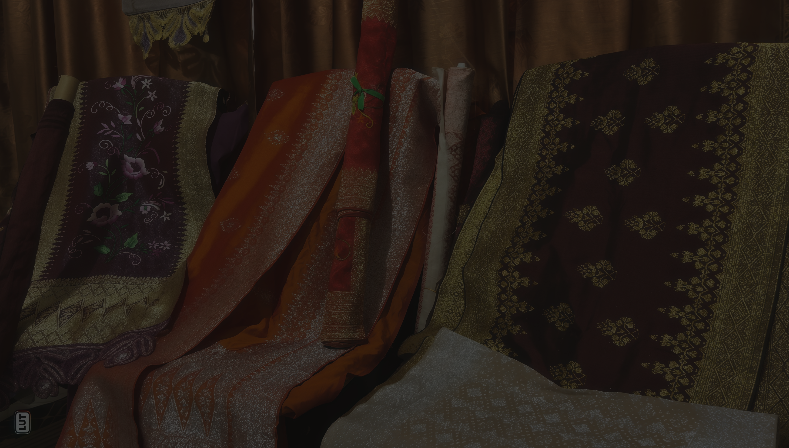

Tentang Meri Songket
Jejak Emas di Kaki Gunung Singgalang
Terletak di lereng Gunung Singgalang yang megah, Nagari Pandai Sikek telah menjadi pusat kerajinan tenun songket Minangkabau selama berabad-abad. Tradisi ini bukan sekadar teknik menyilangkan benang, melainkan sebuah narasi visual yang mencatat sejarah, filosofi, dan identitas masyarakat Sumatera Barat.
Setiap helaian benang emas yang ditenun dengan presisi mencerminkan ketekunan dan kemuliaan. Motif-motif klasik seperti Pucuak Rabuang dan Saik Kalamai bukan hanya hiasan, tetapi doa dan harapan yang diwariskan dari satu generasi ke generasi berikutnya melalui jemari para maestro.

Para Penenun

Nurhayati
42 TAHUN PENGALAMAN
Spesialisasi: Motif Kuno & Pewarnaan Alami

Fatimah
35 TAHUN PENGALAMAN
Spesialisasi: Teknik Menghani & Struktur Benang

Siti Aminah
28 TAHUN PENGALAMAN
Spesialisasi: Desain Motif Geometris Kontemporer

Rosna
20 TAHUN PENGALAMAN
Spesialisasi: Penyelesaian Akhir & Kontrol Kualitas
Proses Pembuatan

Pemilihan Benang
Menyeleksi sutra terbaik dan benang emas berkualitas tinggi sebagai fondasi karya.

Perencanaan Motif
Menghitung dan memetakan setiap motif klasik ke dalam pola tenunan yang akurat.

Menghani
Menyiapkan benang lungsin pada alat tenun untuk menentukan lebar dan panjang kain.

Penatapan
Proses inti menenun dengan tangan, menyatukan benang pakan dan lungsin selama berbulan-bulan.

Penyelesaian
Pemeriksaan kualitas menyeluruh dan perapian setiap detail sebelum menjadi mahakarya.